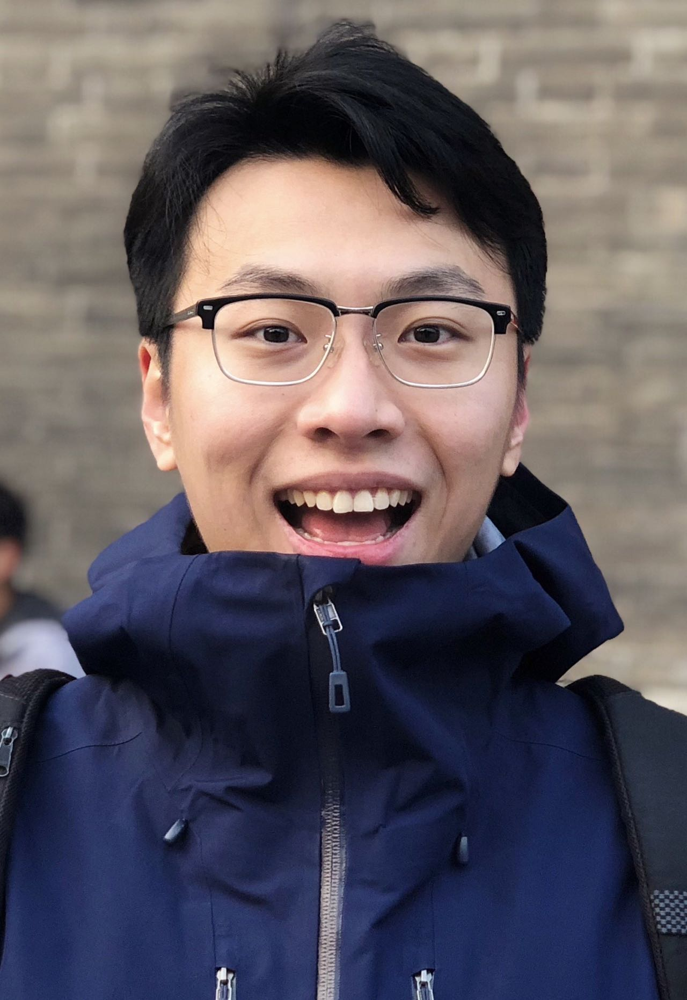

He, Linsheng (贺霖生)
|  | Ph.D. Student, |


About me
I received the B.E. degree from the Changchun University of Science and Technology, in 2017, and the M.S. degree from University of Oklahoma, in 2019. I am currently a Ph.D. Student in the SSS Lab, The University of Alabama, USA and supervised by Professor Fei Hu. My main research interests include Deep Learning, Telecommunication Reinforcement Learning and Medical Computer Vision. Literatlly, I focus on using AI to solve practical problems, such as antenna alignment in highly mobility TeraHertz network, multi-agent flow control in directional antenna, and pathology image segementation.
Research
Research interests
Deep Learning
Reinforcement Learning
Telecommunication
Computer Vision
Current work
Distributed Reinforcement Learning for Multi-agent MAC layer flow control
Highly Mobility Antenna Prediction and Alignment in TeraHertz MAC layer network
Under review
L. He, F. Hu, Z. Chu, J. Zhao, N. Abuzaninab, Y. Sagduyu, N. Thawdar, and S. Kumar, "Deep Neighbor Adaptation (DNA)-based Terahertz Medium Access Control (MAC) for Highly Dynamic Airborne Networks". Current version
Z. Chu, F. Hu, L. He, J. Zhao, N. Abuzaninab, Y. Sagduyu, N. Thawdar, and S. Kumar, "Bubble Routing: Intelligent Terahertz (THz) Data Forwarding Over Flying Ad-Hoc Network (FANET) with High Mission/Mobility Dynamics". Current version
Recent publications
Z. Chu, Z. Ye, J. Zhao, L. He, I. Rasheed, "Novel Framework-Based Routing for Task-Adaptive Mobile Networks of Unmanned Aerial Vehicular", Electronics, Jan. 2022, 11.3, 425 [pdf]
Challenge Co-authors (include L. He), "Idrid: Diabetic retinopathy–segmentation and grading challenge.", Medical image analysis, Sep. 2019, 59, 101561 [pdf]
Full list of publications in Google Scholar.
Academic service
Reviewer
International Journal of Telemedicine and Applications
Projects
Deep Neighbor Adaptation (DNA)-based Terahertz Medium Access Control (MAC) for Highly Dynamic Airborne Networks, 08.2020 - 10.2021
Built a predictive network status estimation model through Graph Convolutional Networks (GCN), LSTM and GAN
Proposed a nested DRL with outer/inner loops for antenna actions selection
Completed THz MAC protocol simulation that considers the routing context and dynamic topology
Ph.D. research
Implementation of Tencent TARS Microservice Deployment RPC Framework and Website Developing, 03.2020 - 04.2020
Launched and deployed own developed bookmark website via Tencent TARS microservice deployment RPC framework.
Tencent challenge project [Bilibili]
Regression and Classification of Breast Cancer Depicting on Digital Pathology Images Using CNNs, 10.2018 - 04.2019
Compared and Integrated the CNN algorithm and performed threshold analysis on different regression functions
Implemented GAN to improve the overfitting of the competition verification set caused by too few testsets, improper data enhancement, and uneven distribution of the dataset
Master's degree thesis [pdf], SPIE 2019 challenge selected
Implementation and Comparison of DUMAS Data Integration Algorithm in PostgreSQL Management System, 03.2019 - 04.2019
Connected and integrated two different databases to reproduce duplicate detection and matching by PostgreSQL
Advanced Database Management Project [Bilibili][Youtube]
Automated Segmentation of Prostate Structures by Using V-Net in MRI, 03.2018 - 05.2018
Implemented V-Net in TensorFlow and performed segmentation prediction on 3-D prostate images in ITK-SNAP
Artificial Neural Netwrok Project [Bilibili][Youtube]
Methods for Brain Tissue Segmentation in CT Images, 03.2018 - 05.2018
Segmented the 3-D brain tissue automatically by implementing thresholds and region growing method in MATLAB
Computer Vision Project [Bilibili][Youtube]
Applying U-Net for Retinal Lesion Segmentation, 01.2018 - 03.2018
Classified four types of early detection of retinopathy from the fundus image
Used two U-Net superposition algorithms to fine-tune the parameters according to different thresholds
Added segmented lesion area to fine calibrate the lesion classification results
ISBI 2018 IDRiD Challenge, sub-challenge one selected
Education
Ph.D., College of Engineering, The University of Alabama, present
GPA: 3.83/4.0
Main Courses: Data Science, Optimal Control, Cyber Security
M.S., College of Engineering, University of Oklahoma, 05.2019
GRE: 320, GPA: 4.0/4.0
Main Courses: Computer Architecture, Machine Learning, Artificial Neural Networks, Computer Vision, Applied Statistical Methods.
B.E., College of Electrical Engineering, Changchun University of Science and Technology, 06.2017
GPA: 3.3/4.0
Main Courses: Digital Signal Processing, Digital Imaging Processing, Logics Circuit, Communication Theory, Wireless Communicate Technology, Field and Wave Electromagnetics.
Work/Intern/Volunteer experience
Graduate Research Assistant, SSS Lab, University of Alabama, 08.2020 - present
Research on deep learning-based telecommunication objects trajectory and direction antennas topology prediction
Simulate Unmanned Aerial Vehicle (UAV) information by distributed deep reinforcement learning (DRL) in OSI muti-layersn
Graduate Teaching Assistant, Digital Logic course, University of Alabama, 08.2021 - present
Work as a laboratory manager, helping students to learn digital logic circuits using Quartus and breadboards
Graduate Research Assistant and Researcher, Computer-Aided Diagnosis Lab, University of Oklahoma, 01.2019 - 05.2020
Researched on breast tumor classification, brain tissue segmentation and pathology detection projects
Developed models of medical image processing in deep neural networks and assist diagnosis by Python
Integrated a local medical image database by directions and labels using the database management method
Graduate Teaching Assistant, Electronic Circuit II course, University of Oklahoma, 08.2018 - 12.2018
Worked for grading, proctor, office hours and laboratory management
Internship, Changchun Communications Station, Northeast Petroleum Pipeline Co., LTD., 06.2016 - 08.2016
Worked on maintenance of STI frequency meter and network equipment in the operation center
Conducted training of the emergency handling operation according to the emergency manual at the base station
Volunteer, Agape Family Life House, Langfang, China, 02.2015 - 03.2015
Made a promotion video [Youtube] introducing the children with osteogenesis imperfecta (OI), in A.F.L.H